Spazzole Tela Extra Ram Vapor System
- Materiale
- Tela vaporizzata e stirata
- Misure
- Ø 180 - 200 - 225 - 240 - 250 - 300 mm
La tela trattata rende la spazzola più resistente. Serve per abrasivare tomaie in pelle e suole in cuoio con cere abrasive.
Spazzole, tamponi e ruote di nostra produzione e articoli in vendita per calzaturifici, suolifici e pelletterie.
Tela, panno militare, lana, cotone e crine.
La tela trattata rende la spazzola più resistente. Serve per abrasivare tomaie in pelle e suole in cuoio con cere abrasive.
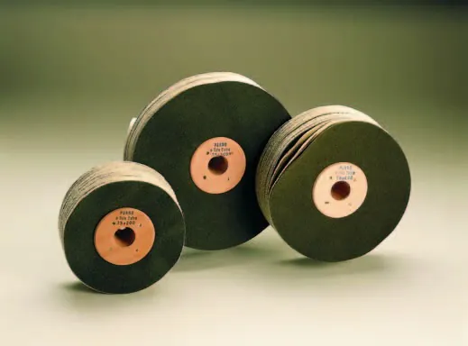
Abrasivano e lucidano suole e tacchi in cuoio con cere abrasive coprenti e tingenti. Indispensabili per suolificio.
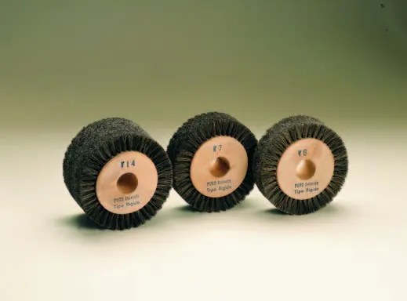
Per tamponare e lucidare tacchi in cuoio e masonite con cere abrasive e carnaube.

Lucidano suole e tacchi con cere abrasive e carnaube. Indispensabili per suolificio.

Lucidano tacchi, tomaie e suole con cere carnaube e li rendono brillanti con creme e appretti.
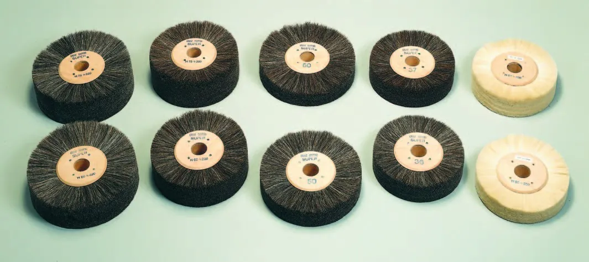
Il crine pulisce la polvere da pelli e cuoio e lucida con creme e cere carnaube. Il pelo di capra è indicato per calzature in rettile, capretto e vitello.
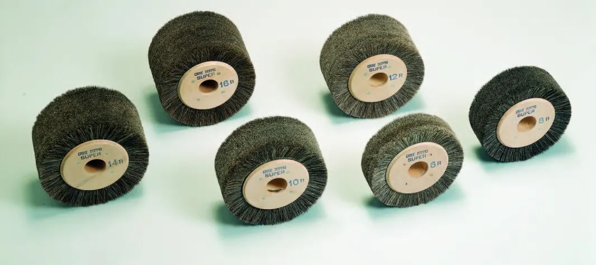
Lucidano tacchi in cuoio con cere abrasive e carnaube. Indispensabili per suolifici.
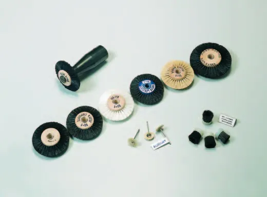
Puliscono i residui di collanti su tomaie in pelle e bordosuola.
Per disponibilità e misure: chiamate lo 0381 20019 o scrivete a info@luper.eu.
Panno militare, cuoio, pelle, smeriglio e Scotch-Brite 3M.

Lisciano tacchi in cuoio con cere coprenti e carnaube: effetto brillante.
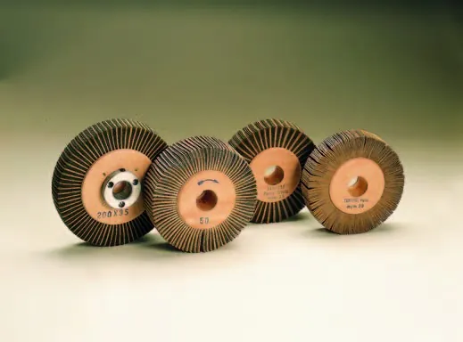
Lisciano tacchi in cuoio con cere carnaube: per lavorazioni artigianali.
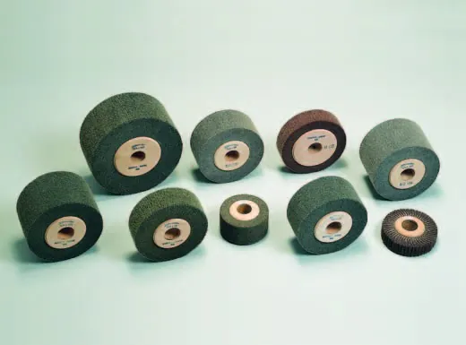
Ravvivano i pellami scamosciati e le suole in cuoio scamosciato.
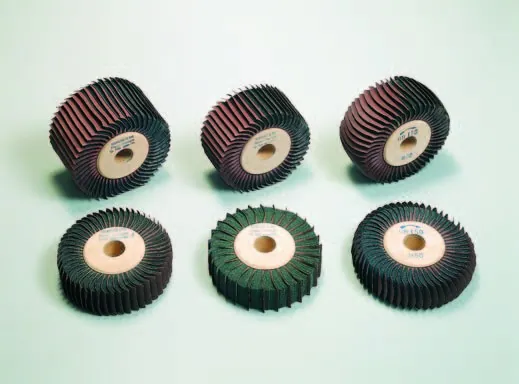
Ravvivano suole in cuoio e pellami scamosciati. Smerigliano tacchi con finitura particolarmente liscia.
Per disponibilità e misure: chiamate lo 0381 20019 o scrivete a info@luper.eu.
Acciaio e gomma, acciaio, legno e feltro. Per abrasivi flessibili da P24 a P400.
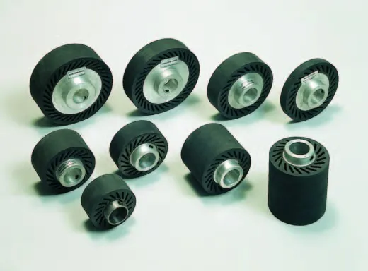
Per la smerigliatura di calzature, suole e tacchi con abrasivi flessibili di ogni diametro, altezza e grana.
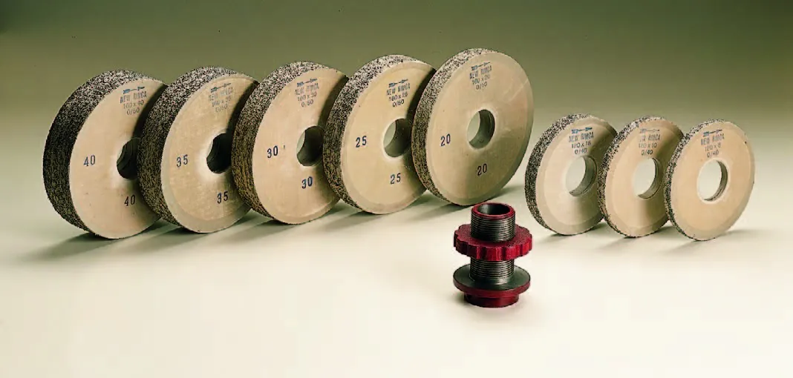
Smerigliano (cardano) pellami di particolare concia e spessore per ottenere un migliore incollaggio.
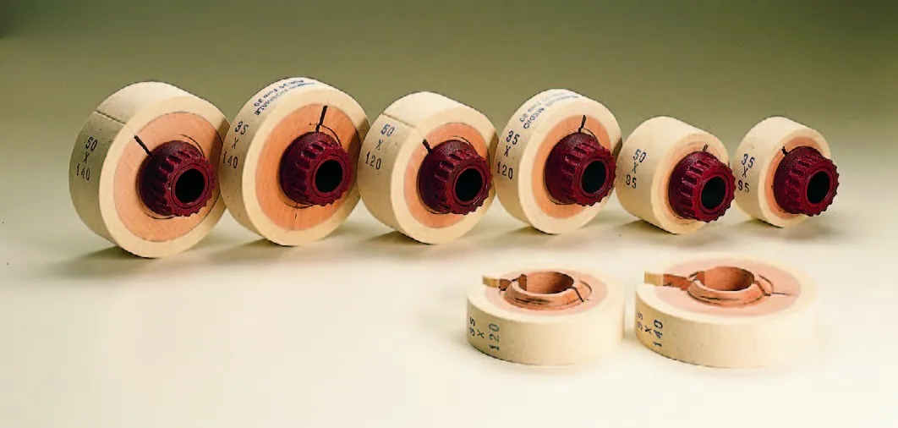
Fanno da supporto agli abrasivi flessibili in rotolo.
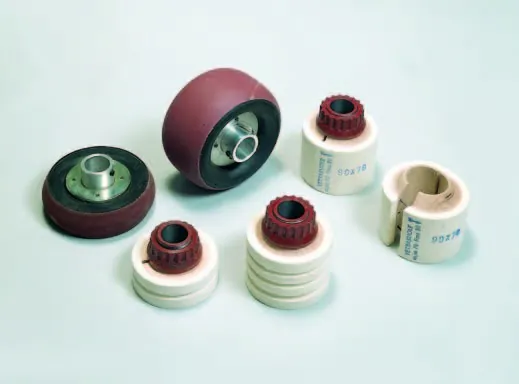
Per smerigliature di tacchi e suole particolari.
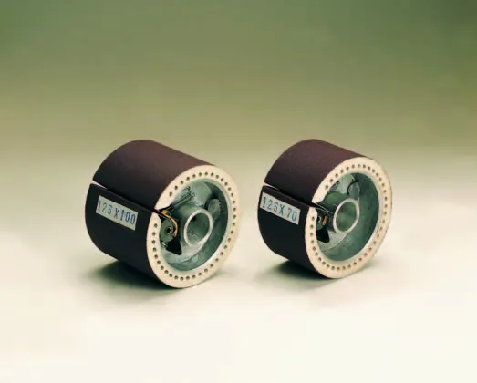
Per smerigliare con precisione calzature, tacchi e suole.
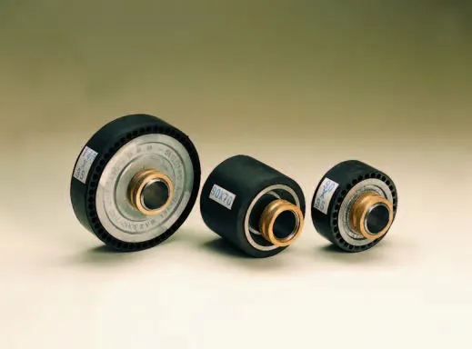
Per la smerigliatura di calzature, suole e tacchi con abrasivi flessibili di vari diametri e altezze.

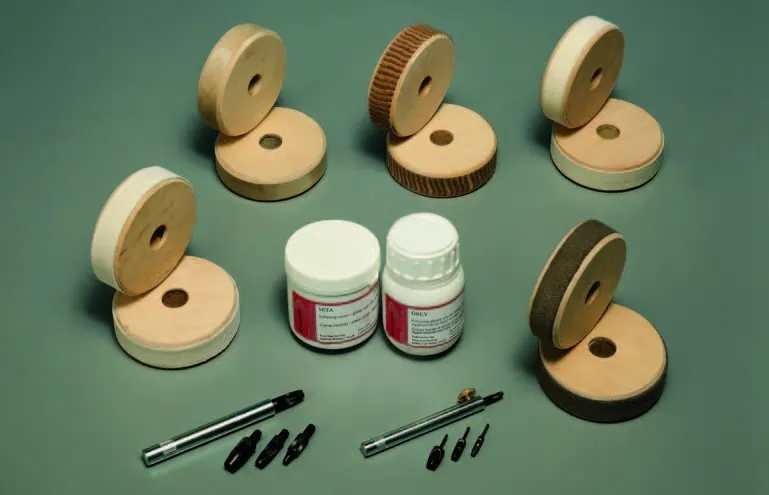
Per disponibilità e misure: chiamate lo 0381 20019 o scrivete a info@luper.eu.
Accessori, attrezzi, componenti e prodotti chimici, per famiglie.

Nastri, rotoli, anelli e pomicini.
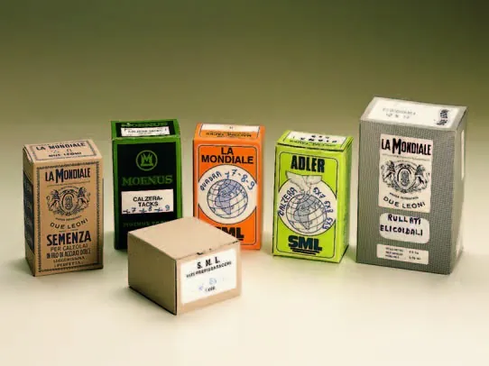
Semenza a mano, calzera e quadra, gruppini, rullati, elicoidali, viti fissatrici, fili bobinati.
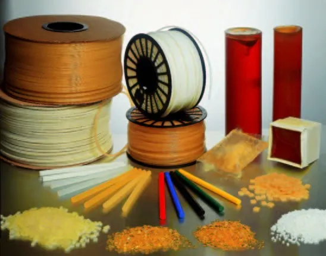
Filo bianco e giallo, strappachiodi, granulare prefissatacchi e per termoripiegatrice. Silicone.

Colori, cere, appretti, creme, solventi e adesivi.

Pinze per forare e per montare, martelli, mazzuole in nylon, levasemenze, rifilacodette, tronchesi.
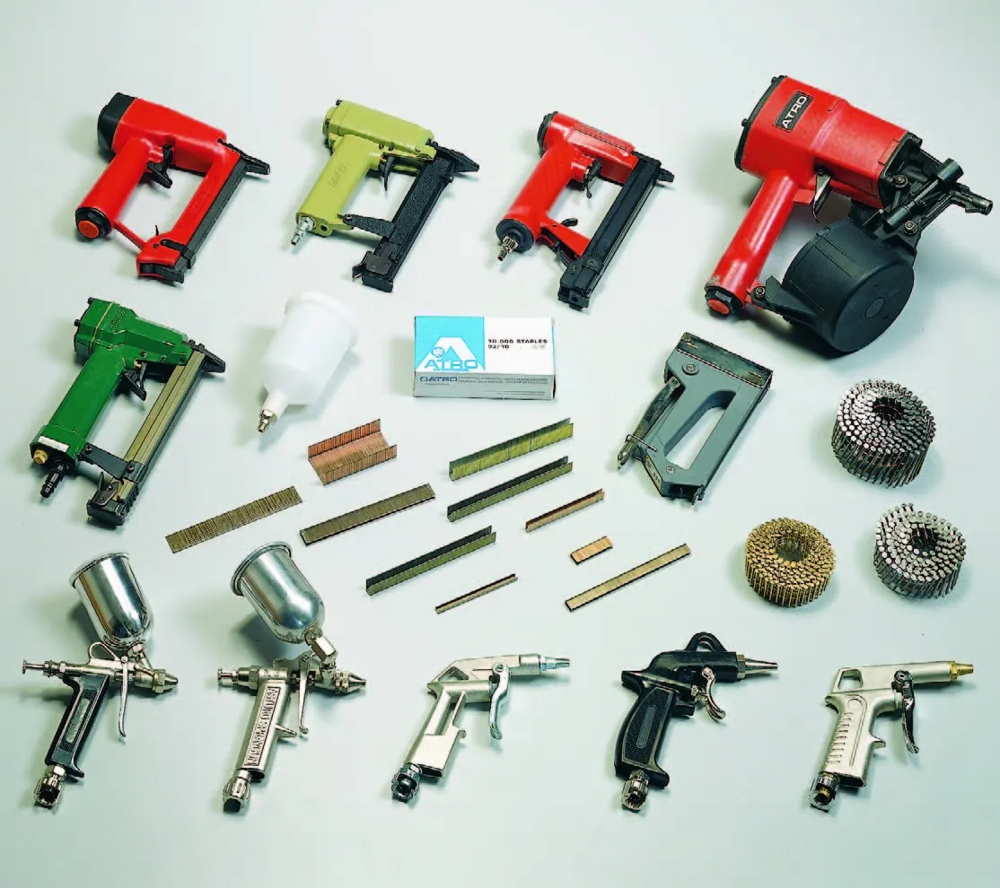
Cucitrici e chiodatrici ad aria, ganci e chiodi, aerografi, pistole di soffiaggio.
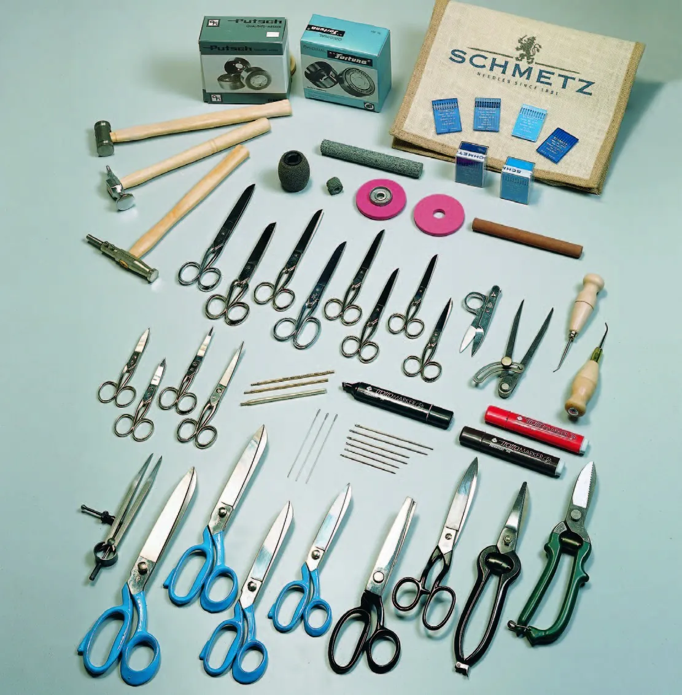
Lame e mole scarnitrici, aghi, lesine, forbici da orlatrice, da sarto e tagliacampioni, compassi.
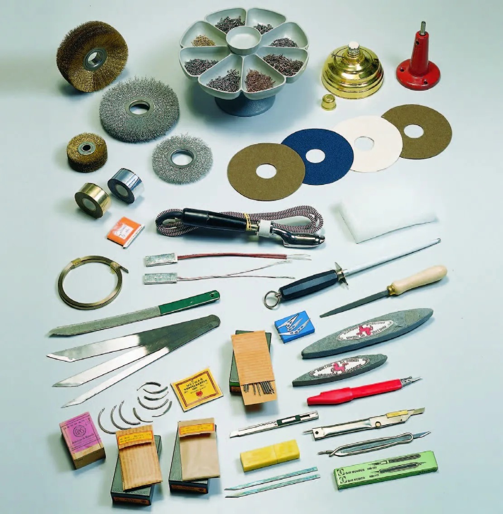
Coltelli da calzolaio e da tagliatore, lame e lamette, coti, bacinelle portasemenze, ferri da stiro per mocassino.
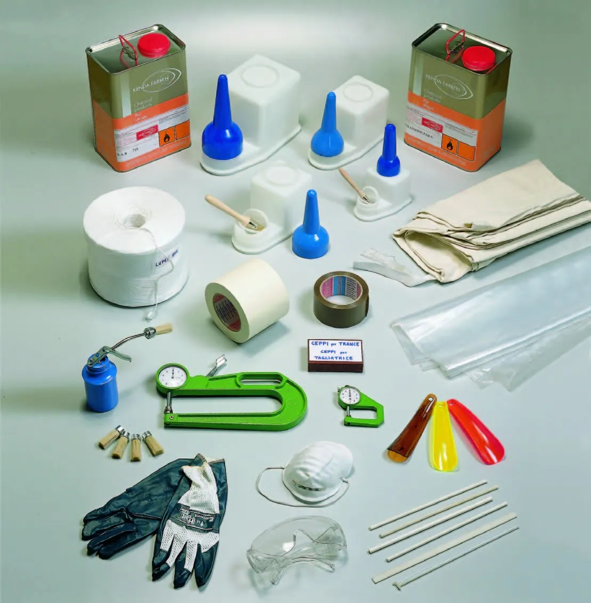
Contenitori per colla, pompette spalmacolla, spessimetri, guanti, mascherine antipolvere, occhiali protettivi.
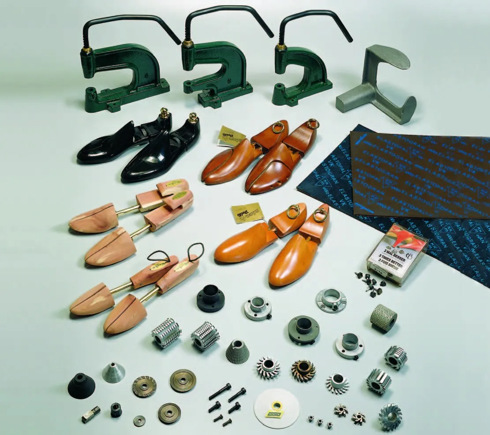
Torchietti e fustelle, frese per suola e per tacco, tendiscarpa, tacchi tranciati, flange.
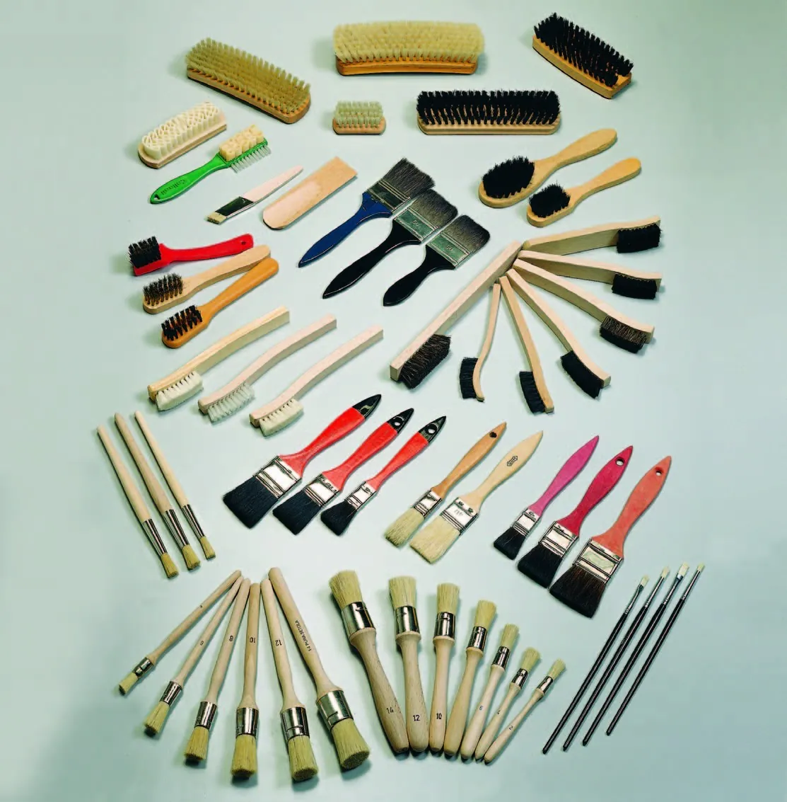
Spazzole rettangolari in crine, spazzolini in ottone e nylon, pennellesse e pennelli da ritocco.

Feltro di lana in lastre, rotoli di rinforzo adesivi, tessuti di rinforzo e non tessuti, cordoncini per mocassino.
Per disponibilità e misure: chiamate lo 0381 20019 o scrivete a info@luper.eu.
Per articoli, misure e disponibilità.
La mappa di Google si carica solo se la apri.